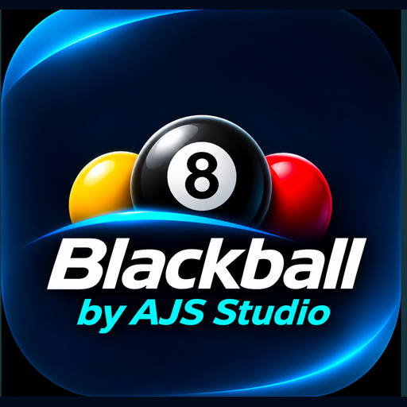

Captura real · versión de prueba
En preparación
AJS American Pool
Bola 8, bola 9, bola 10 y 14.1
Elige tu grupo en bola 8 o sigue el orden de las bolas en bola 9. Coloca la blanca pensando en el siguiente tiro.
Privacidad de este juego ↗ESTUDIO INDEPENDIENTE · JUEGOS Y APPS
Juegos para tus pasiones. Aplicaciones para el día a día. AJS Studio da vida a experiencias móviles sencillas y cuidadas.
Creado en Morlaix, Bretaña

DESTACADO
En desarrollo · Android

El espíritu del club.
En tu bolsillo.
Juega, entrena o arbitra una partida. Blackball by AJS Studio reúne una mesa de billar inglés con reglas Blackball y Ultimate Pool, entrenamiento y un cronómetro de partida.
Ajusta la puntería, regula la potencia y experimenta con los efectos. Juega contra el ordenador o prepara tu próxima sesión en el club.
Practica la lectura de la mesa, las trayectorias y la posición de la bola blanca con ejercicios y un entrenador táctico.
Un cronómetro claro, prórrogas y avisos para ayudar a arbitrar partidas en el club.
Versión de prueba privada. El lanzamiento público está en preparación.
Nuestros primeros proyectos exploran los deportes de precisión. Después llegarán más juegos y aplicaciones.
Captura real · versión de prueba
En preparación
Bola 8, bola 9, bola 10 y 14.1
Elige tu grupo en bola 8 o sigue el orden de las bolas en bola 9. Coloca la blanca pensando en el siguiente tiro.
Privacidad de este juego ↗Captura real · versión de prueba
En preparación
6 rojas y 15 rojas
Alterna rojas y colores para encadenar puntos. Elige una partida de seis rojas o juega con las quince.
Privacidad de este juego ↗Captura real · versión de prueba
En preparación
Libre, una banda y tres bandas
En una mesa sin troneras, golpea las otras dos bolas con la tuya. Prueba la modalidad libre, a una banda o a tres bandas.
Privacidad de este juego ↗Captura real · versión de prueba
Puntuaciones y partidas de dardos
Lanza a tu diana e introduce tus tres dardos. Dart Club lleva la puntuación y pasa al siguiente jugador, del 501 al Cricket.
Descargar en Google Play ↗Privacidad de este juego ↗EL ESTUDIO
AJS Studio es un estudio independiente con sede en Morlaix, Bretaña. Creamos juegos y aplicaciones móviles a partir de necesidades cotidianas y pasiones personales.
Nuestro trabajo empieza con una idea sencilla que toma forma mediante pruebas y comentarios. El billar inicia esta aventura. El estudio explorará muchos otros mundos.
¿UNA PREGUNTA O UN COMENTARIO?
¿Un comentario sobre un juego o una pregunta sobre el estudio? Escríbenos.